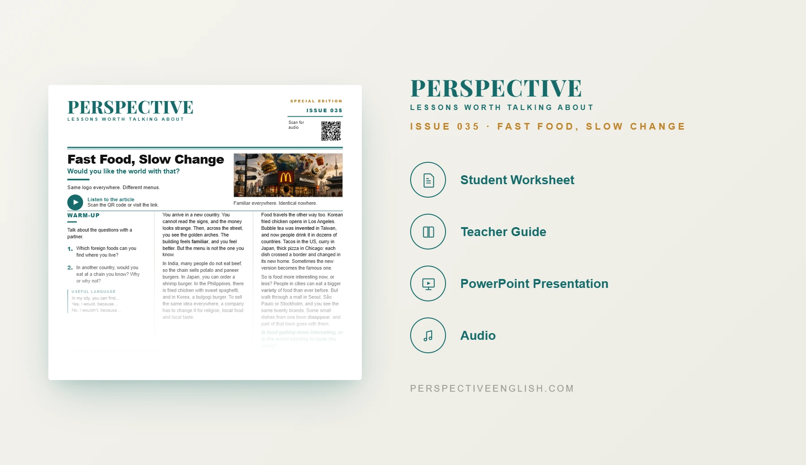

SPECIAL EDITION · ISSUE 035
Fast Food & Globalization ESL Lesson
Would you like the world with that?
A ready-to-teach A1–A2 Fast Food & Globalization ESL lesson about global brands, local menus, food culture and how food changes when it travels.
CHOOSE YOUR LEVEL
Collection 06 includes Issues 031–035.
LESSON PREVIEW

ABOUT THIS LESSON
About This Fast Food & Globalization ESL Lesson
The same fast-food brands appear around the world, but their menus often change to match local food, religion and taste. Food also travels in the other direction, changing as it crosses borders.
This A1–A2 Fast Food & Globalization ESL lesson helps beginner learners talk about foreign food, global chains, local menus, variety and what can be lost when the same brands appear everywhere.
Students use a short original reading and audio, beginner vocabulary, true-or-false comprehension, five discussion questions, a restaurant adaptation activity, a menu-item speaking challenge and guided writing.
FROM THE ARTICLE
WHAT'S INCLUDED
What's Included in the Fast Food & Globalization Lesson?
- Magazine-style A1–A2 ESL student worksheet
- Short original fast food and globalization reading and audio recording
- Five beginner vocabulary items and true-or-false reading comprehension questions
- Five supported discussion questions about foreign food, global chains, changing dishes and cities becoming more alike
- Your Food Abroad critical-thinking activity: decide what to keep and what to change when opening your country’s restaurant abroad
- Compare how many changes can be made before the food no longer feels like your country’s food
- Language in Context practice with words from the article
- Global-chain speaking challenge: invent one new menu item for your town and explain what it replaces
- 60–100 word guided writing task: Is food becoming more interesting, or starting to taste the same?
- Teacher guide and complete answer key
- Ready-to-use classroom presentation
GET THE COMPLETE LESSON
Ready to Teach Fast Food, Slow Change?
Get the complete A1–A2 Fast Food & Globalization ESL lesson individually or save with Perspective Collection 06.
Secure checkout and instant digital delivery through Payhip.